Managing Files
Introduction
This guide steps you through how to manage files and directories in ownCloud’s iOS app; You will learn all about uploading, moving, dragging and dropping, and viewing files, file and folder actions, and navigating folders.
Features
-
File list filter
-
File sort options
-
Thumbnails for supported images
-
File quota (only displayed in the root folder)
-
File actions
-
Folder actions
-
Select all/none
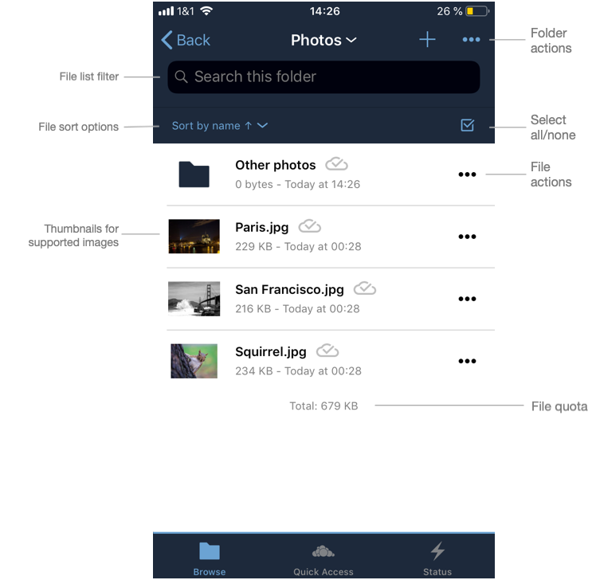
Click on a file to view it and click on a folder to view its contents. To view further actions available for a file or folder, click the More icon on the far right-hand side.
File Actions
The actions available for files are:
-
Open in
-
Move
-
Rename
-
Duplicate
-
Copy
-
Delete
-
Make Available Offline
However, file actions are handled slightly differently, depending on whether one or multiple files have been selected. You can see the differences in the two images below.
| Individual File Actions | Multiple-Selected File Actions |
|---|---|
File popup for actions for individual files |
Move icon row for multiple-selected files |
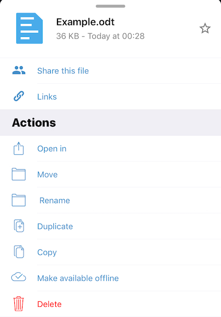 |
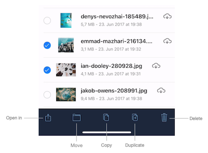 |
| The file size values differ depending on the client you are using. Some operating systems like iOS and macOS use the decimal system (power of 10) where 1kB or one kilobyte consists of 1000 bytes, while Linux, Android and Windows use the binary system (power of 2) where 1KB consists of 1024 bytes and is called a kibibyte. So no reason to worry if you see different file sizes in the desktop client and on your mobile device. |
Navigate Folders
There are two ways to navigate folders (outside of the root folder). To go back to the parent folder, tap Back in the top left-hand corner. To navigate directly to any parent folder, tap on the current folder’s name. When you do, you will see the names of all the parent folders, right up to the root folder, as in the image below.
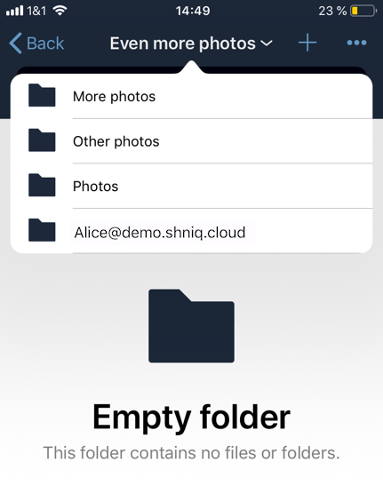
Navigate Files
When navigating files, as you would expect, you can scroll up and down the files and folders list. In addition, you can also use the index bar, highlighted in the screenshot below, to speed up traversing through files and folders. As you slide your finger over each letter, you’ll jump to the first file (or folder) that begins with that letter.
The index bar is only visible, if the sort order is Name.
|
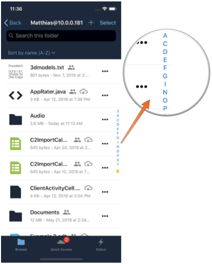
Sort Files and Folders
By default, files and folders are sorted by name in ascending order, with folders sorted before files. However, files can be sorted in ascending and descending order by name, type, size, date, and shared. If you press the Sort by menu, you can change sort method and order. The first time you change the sort category, files and folders are sorted using that category in ascending order. If you choose that category a second time, the sort order is inverted.
| Sorting files and folders in portrait mode | Sorting files and folders in landscape mode |
|---|---|
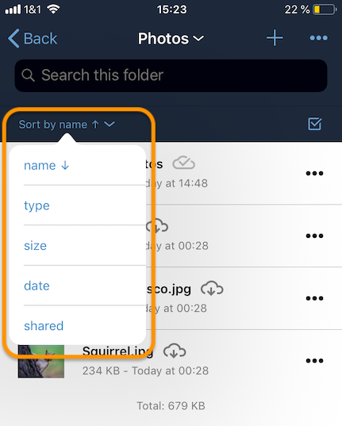 |
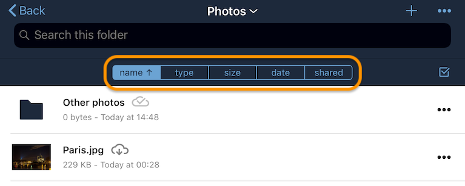 |
View Files
To view a file, tap on its name in the file list. Any file type supported by iOS Safari can be displayed in the app. Depending on the file type, the image will be able to viewed, or an icon for it, along with some file details, will be displayed.
|
If the file is not available locally on the device, you will see next to the file. When you click on it, you will see next to it while it downloads. |
An image file |
A video file |
A PDF file |
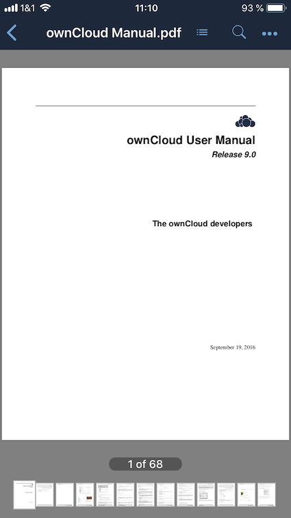 |
||
A text file |
An ODT file. |
|
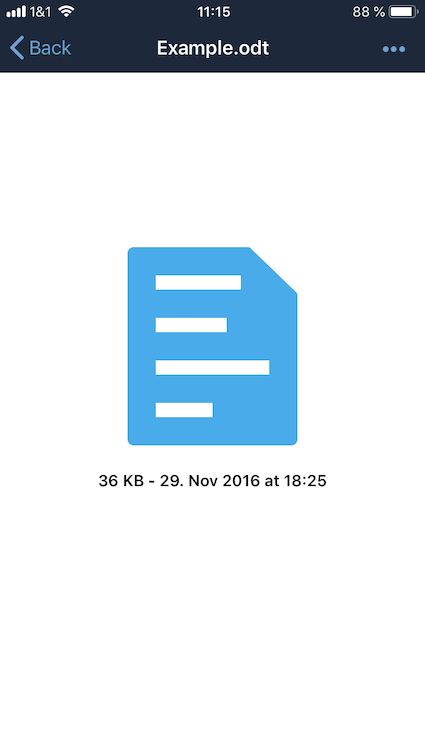 |
PDF Files
When viewing PDF files four UI options are available which make working with them easier; these are:
-
A page selector
-
Page thumbnails
-
A Table of Contents
-
File Search
You can see an example of each in the images below.
A page selector |
A table of contents |
Page thumbnails |
File search |
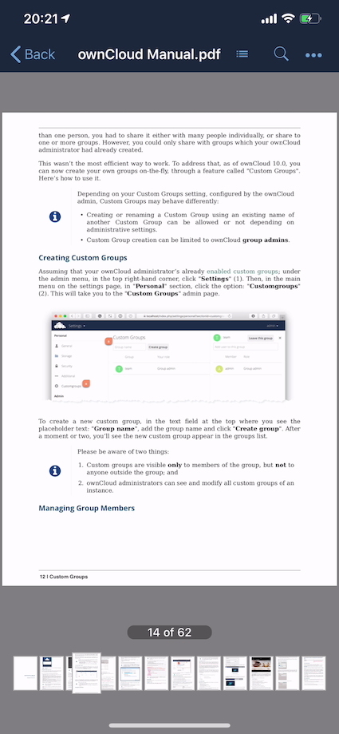 |
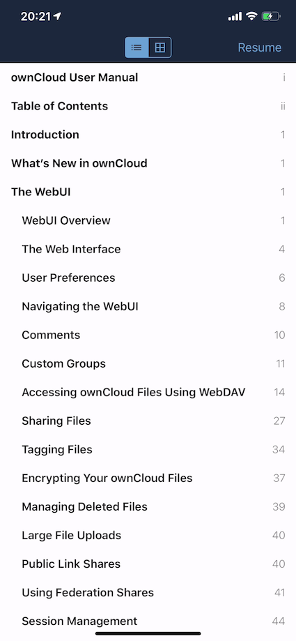 |
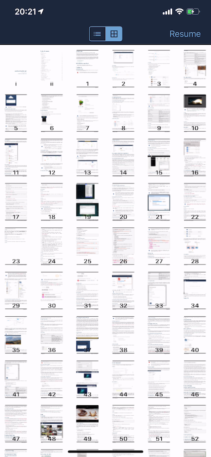 |
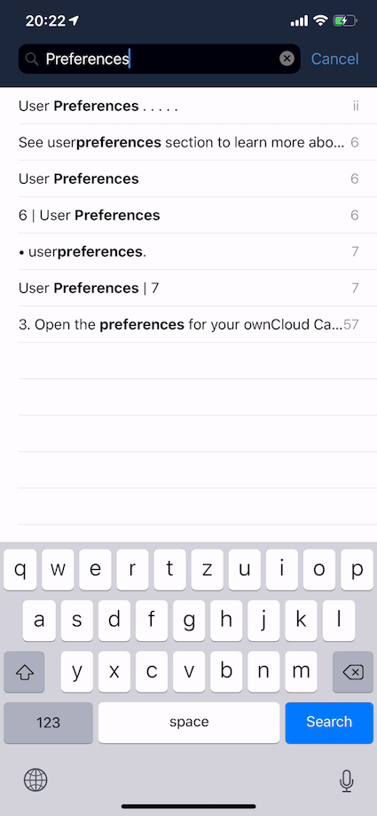 |
Folder Actions
When working with folders, click the plus icon near the top right-hand corner, and three actions become available; these are:
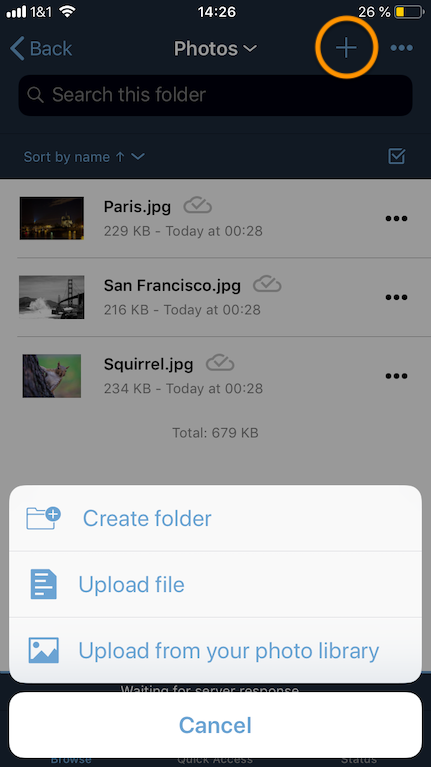
Create Folder
To create a new folder, click Create folder, enter the name of the new folder, as in the image below, and click return.
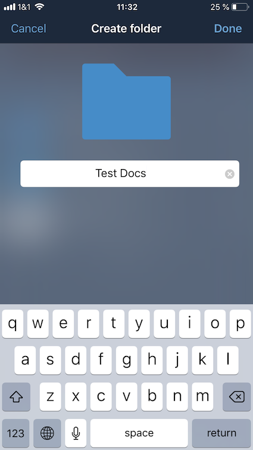
Upload Files
To upload files or any time from your device to your ownCloud server, click Upload file. You will then be able to select or browse through files from any app that exposes data to the iOS files app.
Make Available Offline
Please see the Offline Storage section.
Upload File From Your Photo Library
To upload photos from your photo library, you first need to allow the iOS app access to your photos. After that, you can browse through your photos, as you normally would. You can then select one or more photos by pressing them, or click Select All in the bottom left-hand corner to select all photos in the current folder. When you’re happy with your photo selection, click Upload and the photo(s) will be uploaded.
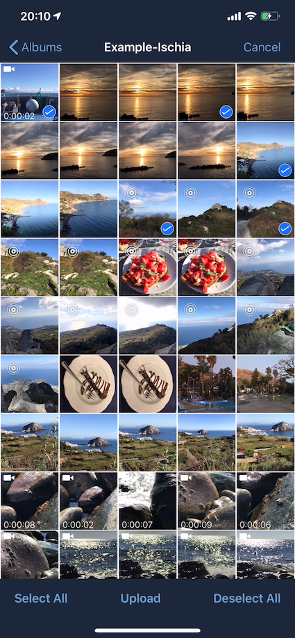
Move Files and Folders
Whether you are using the iPhone or iPad version of the ownCloud app, you can select and drag and drop one or more files and folders from one folder to another. To do so, you first press Select in the top right-hand corner and select one or more files and/or folders. Then, you press and hold on any of the selected files and folders and:
-
Drag and drop them over a folder in the current directory
-
Drag and drop them over the "Move to" icon (or tap the icon), near the bottom left-hand side of the screen. You then navigate to the folder that you want to move them to and click Move here at the bottom of the screen.
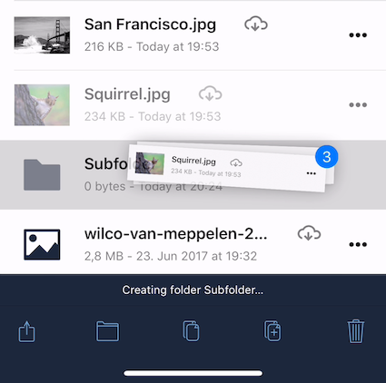
|
If a file or folder with the same name as one or more of those being moved, already exists in the destination directory, you will see a warning that the file or folder could not be moved. 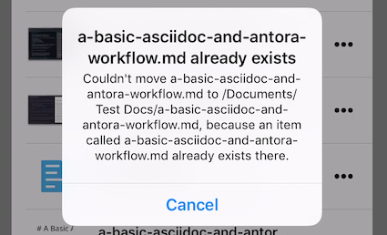 |
Drag & Drop Files Between Apps (iPad-only)
The iOS app supports the multitasking features on iPad. If you open it as a second app with Slide Over, you can use two apps at the same time with Split View and drag and drop one or more files between the two apps. Refer to Apple’s Multitasking On Your iPad guide for more information.
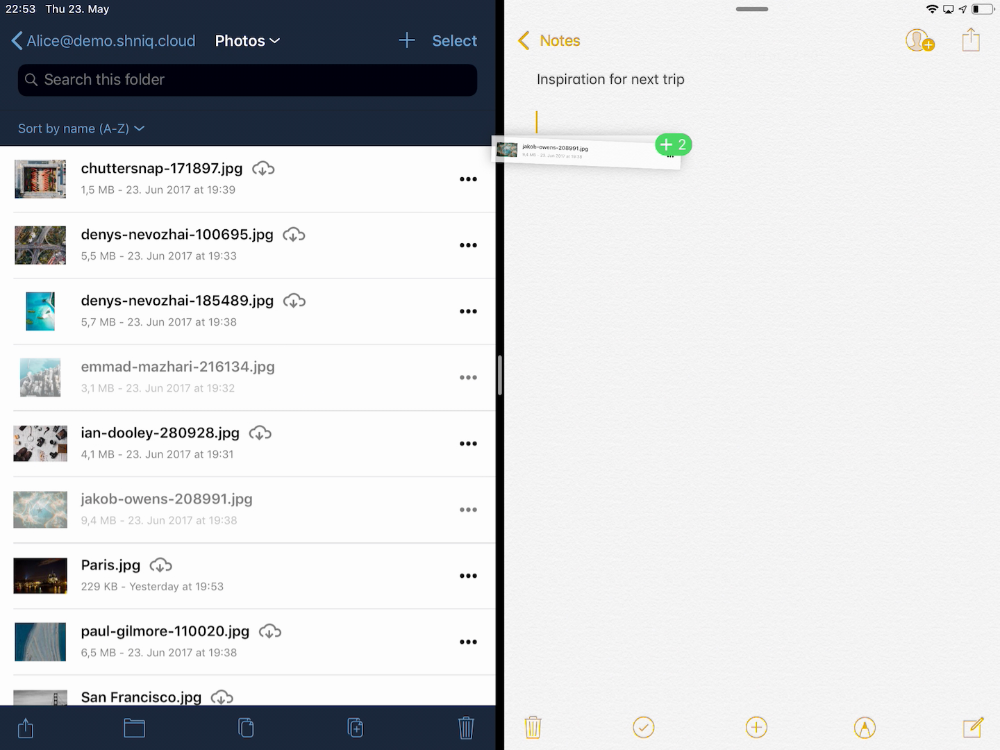